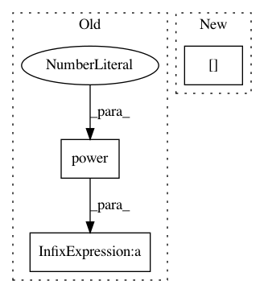

b6b9c8010f5607f754786ff473f5c06264085b27,scipy/spatial/transform/rotation.py,Rotation,from_rotvec,#Any#Any#,201
Before Change
small_angle = np.nonzero(np.logical_and(
norms <= 1e-3, norms != 0))[0]
quat[small_angle, :3] = (0.5 - np.power(norms[small_angle], 2) /
48 + np.power(norms[small_angle], 4) /
3840) * rot_vecs[small_angle]
large_angle = np.nonzero(norms > 1e-3)[0]
quat[large_angle, :3] = (np.sin(norms[large_angle] / 2) /
norms[large_angle]) * rot_vecs[large_angle]
After Change
small_angle = np.nonzero(np.logical_and(
norms <= 1e-3, norms != 0))[0]
scale[small_angle] = (0.5 - norms[small_angle] ** 2 / 48 +
norms[small_angle] ** 4 / 3840)
large_angle = np.nonzero(norms > 1e-3)[0]
In pattern: SUPERPATTERN
Frequency: 3
Non-data size: 3
Instances
Project Name: scipy/scipy
Commit Name: b6b9c8010f5607f754786ff473f5c06264085b27
Time: 2018-06-30
Author: adibhar97@gmail.com
File Name: scipy/spatial/transform/rotation.py
Class Name: Rotation
Method Name: from_rotvec
Project Name: epfl-lts2/pygsp
Commit Name: a3e0d7eeb19be28d721b40746aea962c87e234a0
Time: 2015-01-27
Author: basile.chatillon@epfl.ch
File Name: pygsp/graphs.py
Class Name: NNGraph
Method Name: __init__
Project Name: ray-project/ray
Commit Name: b7dbbfbf4111698145bb9e0bf2e34e36fef0430c
Time: 2020-11-25
Author: sven@anyscale.io
File Name: rllib/agents/sac/tests/test_sac.py
Class Name: TestSAC
Method Name: _sac_loss_helper